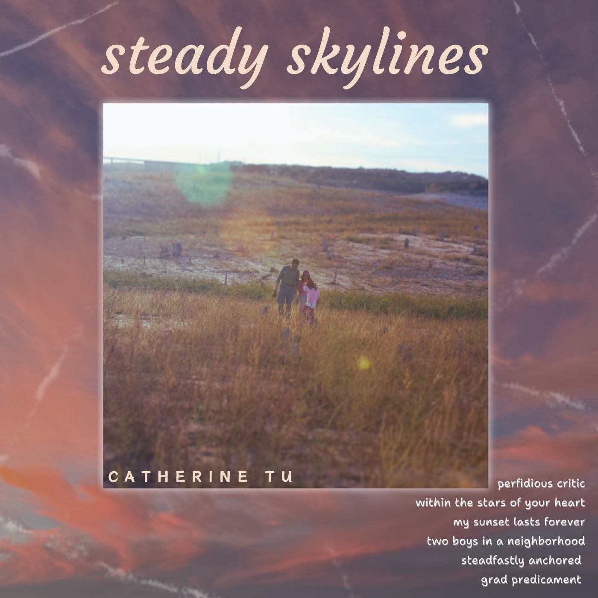

Hey! I'm Catherine Tu.
I'm a student at MIT pursuing computer science and music, interested in audio/signal processing, robotics, AI/ML, and web dev!
Projects & Work
Here are some of my recent contributions

chilldeck
2025 - 2nd Place Winners & Best Futuristic UIUtilized Audioshake API, React, CSS, and MongoDB, built a web app from scratch in 1 month that allows users to choose/upload songs, operate a DJ console online, and have their own custom profiles, aiming to make DJ-ing more accessible to beginners

Optical Flow Algorithm on Brain Data
2024Applied an optical flow algorithm on real brain data finding the vector field of cerebrospinal fluid (CSF) within the fourth ventricle over time. Created and delivered a presentation to lab members during team meeting to brainstorm ways they can apply the algorithm

Organic Lights Nonprofit
2020 - 2024Created a 3D-printed, rechargeable, solar-powered lights designed to last 6-8 hours with custom insertions, and I delivered 220+ lights to spread hope, STEM awareness, and sustainable energy, in collaboration with 8 organizations, 4 of which were international
NASA Robotics Intern
2024Helped design an upgraded solar charging station for the Lunar Terrain Vehicle (LTV), which will power the vehicle during lunar missions more efficiently. When a problem arose in the LTV propulsion system, I replaced two Elmos motor controllers within the avionics box.

NASA SEES Internship
2023Used NASA’s GRACE/GRACE-FO satellite data to measure water movement and create simulations projecting range accelearation over ground tracks, finding non-uniform water shifts around Greenland & Antarctica. We presented our findings at AGU (American Geophysical Union).
Music
My musical journey and activities
-

steady skylines ep
2024Wrote, accompanied, recorded, and produced my own first EP album, and published it on steaming services like Spotify and Apple Music.
stream here -

MIT Logs
2024 - PresentJoined the MIT Logs, a student-led a cappella group on campus, and we put on end of semester concerts, perform at gigs. As the Event & Concert Coordinator, I'm in charge of the logistics of concerts, Valentine's Day serenades, Campus Preview Weekend, and more!
MIT Logs Website -

YouTube Channel
2020 - PresentPublish song covers, original music, and content about my life to my channel, accumulating over 2.2K subscribers and 250K+ views.
YouTube -

Worship Team
2021 - PresentServed on various worship teams, from my home church's youth group and English Congregation to MIT ACF, learning to lead worship and music on guitar, bass, vocals.
Worship Sets
Awards & Recognition
MIT Web Lab: 2nd Place Winners & Best Futuristic UI
Class and competition learning all aspects of web dev (front end, back end, databases) and creating our own website in 25 days
Texas Education Agency (TEA) Student Heros
1 student chosen within each state district (15 total) recognized for volunteer service
FRC Deans List Finalist
1 of 5 students chosen from robotics teams across TX & NM who displayed leadership and furthered STEM education while pursing technical expertise


About Me
Code, Creativity, Coffee.
I'm Catherine Tu, an MIT student with a passion for software and music, where creativity and innovation fuel me. From incorperating music into dynamic web projects to learning to produce and compose original songs, I love exploring the intersection of technology and artistry. Outside of academics, I enjoy music--singing, songwriting, and playing guitar or piano. I'm also a coffee enthusiast, always experimenting with new recipes to craft the perfect brew. As one could say, I love finding the perfect blend between code and creativity (and coffee)!
Stay in Touch
Feel free to reach out!